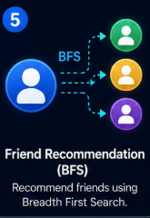
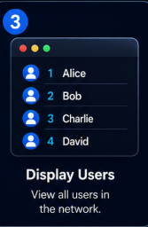
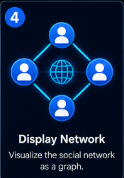
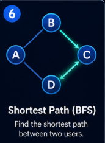
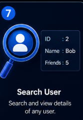
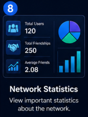

An intelligent friend recommendation system built using Graph Data Structure and Breadth First Search (BFS). Discover mutual friends, shortest connections and build smarter social networks.

The Social Network Friend Recommendation Engine is a graph-based application designed to simulate a real-world social networking platform. Each user is represented as a node, while friendships are represented as edges in an adjacency list graph. The system uses Breadth First Search (BFS) to recommend friends, discover mutual connections, and calculate the shortest path between users. It also provides network analytics such as the most popular user, average connections, and overall graph statistics, demonstrating practical applications of Data Structures and Algorithms.
Core programming language used to implement graph algorithms.
Represents users and friendships using an adjacency list.
Used for friend recommendation and shortest path search.
Creates the project interface.
Provides styling, layout and animations.
Implements dynamic user interaction and network simulation.
Create and manage users efficiently.
Recommend friends using BFS traversal.
Find the minimum connection between two users.
Analyze friendships and social network statistics.
Adjacency List Representation
Friend Recommendation Algorithm
Connection Finder Between Users
Graph + Queue + HashMap
Create new users dynamically.
Connect users using graph edges.

View all users in the social network.

Visualize the social network graph.
BFS recommends friends-of-friends.

Find the shortest connection between two users.

Display user details instantly.

View users, friendships and average connections.
Identify the user with the highest number of friends.
Remove users and update the network.
User joins the social network.
Friendships are stored using an Adjacency List.
Breadth First Search (BFS) traverses the network.
Friends of friends are identified as recommendations.
The shortest connection between two users is calculated.
The system displays recommendations and network statistics.
O(1)
O(1)
O(1)
O(V + E)
O(V + E)
O(V + E)
Role: C++ & DSA Developer
Developed the Social Network Friend Recommendation Engine independently using C++ and Data Structures & Algorithms. Implemented Graphs, Breadth-First Search (BFS), Adjacency List, Queue, Friend Recommendation, Shortest Path, Search User, and Network Statistics.
Technologies: C++, DSA, Graph, BFS, Queue, HTML, CSS, JavaScript
Name: Jahnavi
Project: Social Network Friend Recommendation Engine
Technologies: C++, Graph, BFS, HTML, CSS, JavaScript
University: Lovely Professional University
Create users, build friendships, explore BFS recommendations, find shortest paths, search users, and analyze the network in real time.